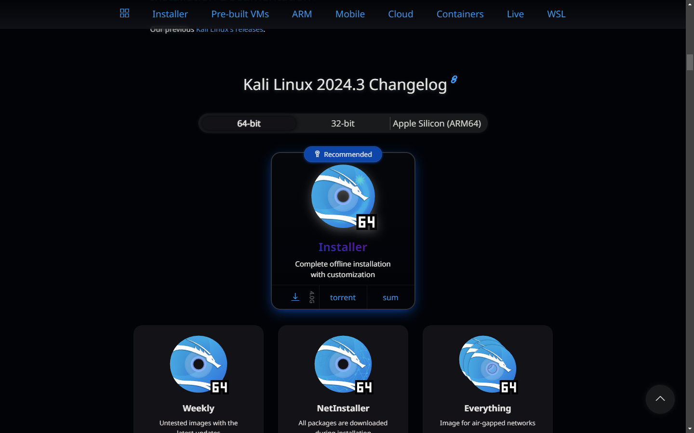

Langkah 1: Unduh Kali Linux
Anda bisa mengunduh ISO Kali Linux dari situs resmi Kali Linux. Pastikan Anda memilih versi yang sesuai dengan spesifikasi perangkat Anda.
Langkah 2: Instal VirtualBox
Jika Anda belum menginstal VirtualBox, silakan unduh dari situs resmi VirtualBox dan lakukan instalasi sesuai instruksi yang ada di situs tersebut. Pastikan untuk menyesuaikan OS Yang kamu pakai, Karena saya menggunakan windows maka saya mendownload virtualbox versi Windows
Langkah 3: Buat Mesin Virtual Baru
- Buka VirtualBox, klik tombol New.
- Berikan nama mesin virtual, pilih tipe Linux dan versi Debian (64-bit) (atau sesuai arsitektur ISO Anda).
- Atur memori minimal 2 GB, namun disarankan lebih besar untuk performa optimal.
- Pilih "Create a virtual hard disk now" untuk membuat hard disk virtual baru.
Langkah 4: Instal Kali Linux
- Setelah membuat mesin virtual, klik kanan pada mesin tersebut dan pilih Settings.
- Di bagian Storage, klik pada ikon Empty, lalu tambahkan file ISO Kali Linux sebagai drive optik.
- Jalankan mesin virtual dan ikuti instruksi instalasi Kali Linux. Pilih opsi instalasi yang Anda inginkan (rekomendasi: Install atau Graphical Install).
- Berikutnya Kita masuk kedalam proses instalasi : Langkah Pertama yaitu memilih bahasa
- Setelah Memilih bahasa kita inputkan username dan password untuk OS Kali linux kita
- Setelah menginput username dan password serta mensetting zona waktu, kita lanjutkan untuk memilih partisi disk yang sidah kita alokasikan sebelumnya
- Setelah memilih partisi disk (Virtual) Kita lanjutkan untuk install Linux Desktop Enviroment, saya sekalian menggunakan GNOME Untuk opsi instalasi saya, jika misal hardware kamu punya spek terbatas pilih saja XFCE
- Setelah memilih opsi Linux Desktop Enviroment, next kita pasangkan Boot Loader ke dalam Virtual disk kita
- Setelah semuanya siap dan telah memasang bootloader kita tinggal pilih "Next" dan Kali Linux akan di install secara penuh di virtualbox kita, waktu instalasi akan tergantung pada hardware masing-masing, jika kita memakai SSD Waktu instalasi akan jauh lebih cepat, Begiitu sebaliknya dengan HDD Waktu instalasi akan terasa lebih lambat
Langkah 5: Mulai Menggunakan Kali Linux
Setelah instalasi selesai, Daan VOILA...... Kali Linux kita sudah terinstall sepenuhnya di Virtualbox